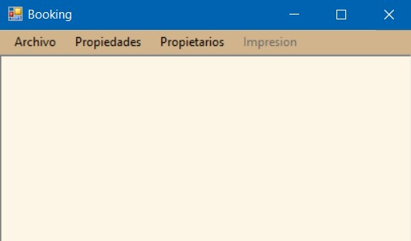

La ayuda aún se encuentra en construcción, por lo que no cubre todas las funcionalidades a nivel de interfaz. Los tópicos disponibles son:
Iniciar Sesión: Iniciar la sesión con un usuario valido. Nombre de usuario y contraseña.
Cerrar Sesión: Cierra la sesión del usuario actual.
Registrar Usuario: Agrega un usuario para acceder a la aplicación. Se solicitara Nombre, Apellido, un nombre de usuario y contraseña para hacer efectiva la activación del mismo. Deberá tildar la casilla inferior derecha si se desea que el nuevo usuario tenga credenciales de administrador.
Exportar Sistema: Realiza un backup del sistema y todos sus campos en al momento actual del mismo. El cual puede ser posteriormente utilizado para la recuperación del sistema de acuerdo a la versión del archivo de backup que se esté importando.
Importar Sistema: Sirve para retornar el sistema a un punto de control mediante un archivo previamente guardado, (Exportar Sistema) a la versión de dicho archivo.
Página de Ayuda: Ingresar a la página de ayuda de CTU BOOKING.
Salir: Sale de la aplicación.
Crear Propiedad: Inicialmente deberá añadir un nuevo propietario, o de ya poseer uno o más, seleccionar el mismo de la lista de propietarios. Para crear la propiedad una vez seleccionada la opción, se desplegara la ventana nueva propiedad. Deberá cargar el propietario seleccionando uno. Colocar el nombre de la propiedad, La localidad, si ya se encuentra cargada en lista seleccionar desde la marca, de otra manera deberá crear una nueva desde el botón Nueva. Colocar la dirección de la propiedad, las plazas y el precio base. A su derecha marcar las opciones según Tipo de Propiedad y Servicios a ofrecer. La categoría deberá ser elegida también, de lo contrario el sistema dejara por defecto el número 1. Una vez cargados los datos de la propiedad deberá confirmar la misma para que ésta sea exitosa la y quede registrada.
1. Filtrar Propiedad: Mediante las casillas de selección puede marcar las distintas opciones por las que desea buscar la propiedad, estas pueden ser, por Tipo de propiedad, por los Servicios disponibles, por Precio (Min, Max) y por cantidad de Plazas (Exactas, Mínimas) y filtrar por las mismas.
2. Editar Propiedad: Si posee las credenciales de “administrador” mediante esta opción podrá editar las opciones de la propiedad, como así también borrar las propiedades deseadas.
3. Ver Disponibilidad: Ver disponibilidad de las propiedades con las opciones de filtrado seleccionadas. Siempre que la aplicación tenga propiedades cargas con anterioridad (cualquier usuario). Accede a los días del mes disponibles para reservar y confirmar su selección una vez completados los datos del cliente. Los que deben ser completados en su totalidad (Nombre, CUIT/CUIL, Teléfono y Dirección).
Añadir Propietario: Con credenciales de “administrador” podrá añadir los mismos. Se solicitara Nombre, Apellido, DNI y Teléfono.
Listar Propietario: Se despliega la ventana mostrando la Disponibilidad de propietarios y su conformación mediante un listado.
1. Migrar Reservas: Exporta todas las reservas de un propietario a un archivo “csv.”
2. Generar Resumen: Genera un archivo PDF con las reservas actuales del propietario listado.
3. Salir: Salir de la ventana actual.
Vista previa: Se abre ventana mostrando una vista previa de lo que se está por imprimir. Se puede realizar una impresión desde la misma.
Configurar Pagina: Abre una ventana desde la cual puede configurar la página donde se realizará la impresión, la orientación de la misma, márgenes y papel.
Imprimir: Abre la ventana de impresión, selección de impresora, intervalos, etc.